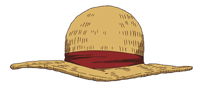

Ciudad Orange

Es un pueblo del East Blue situado en las islas Organ. Los Piratas de Sombrero de Paja visitaron el pueblo durante los acontecimientos del arco de la ciudad Orange.

Es un pueblo del East Blue situado en las islas Organ. Los Piratas de Sombrero de Paja visitaron el pueblo durante los acontecimientos del arco de la ciudad Orange.